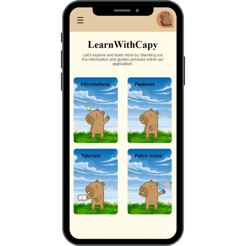
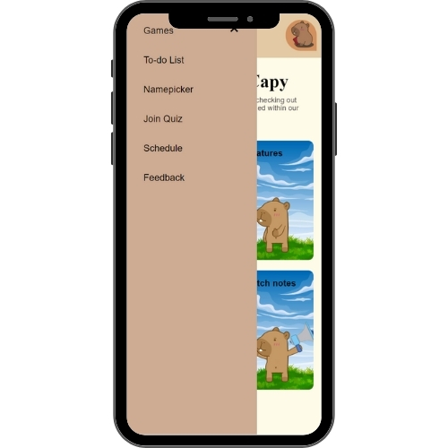
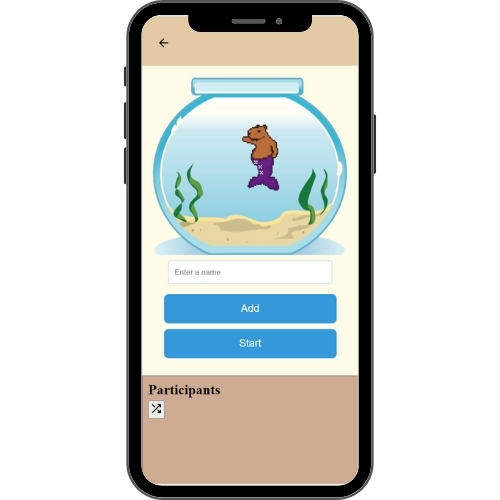
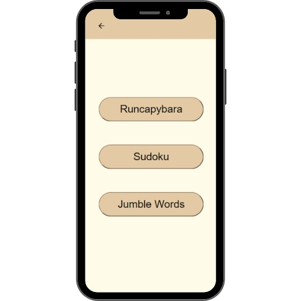
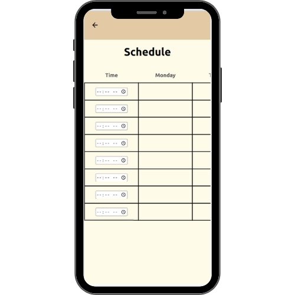
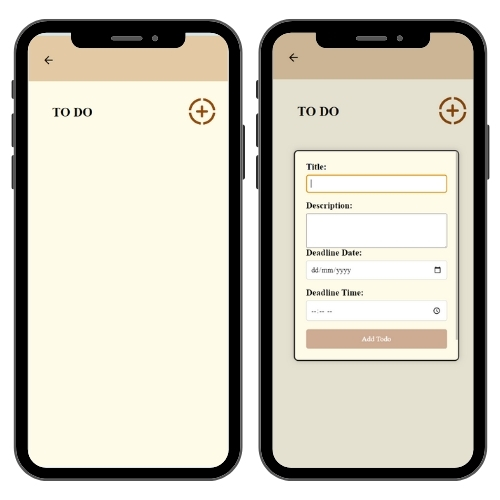
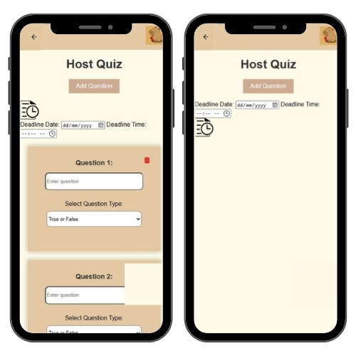
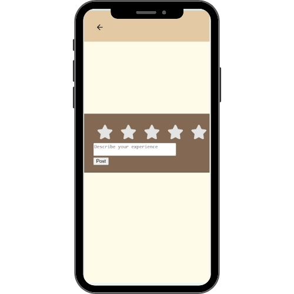

Project Overview
LearnWithCapy is a multi-functional interactive web application designed to bridge the gap between classroom management and self-paced learning. It integrates gamification into standard study tools to create a stress-free environment for Senior High School students.
The Story (Why We Built It)
This project was born from our own struggles as students. We wanted to solve the need for a more organized study environment while helping teachers manage interactions. We designed distinct interfaces for both users: a management dashboard for teachers and a gamified workspace for students.

Student Dashboard Interface

Main Menu Navigation
My Role: Project Manager & Frontend Contributor
I managed the Software Development Lifecycle (SDLC) while leading the UI/UX design.
- Ideation & Scoping: Led the feasibility analysis to select features that were achievable yet impactful
- UI/UX Architecture: Designed the navigation flow and responsive layouts for mobile view
- Quality Assurance: Implemented the Feedback system to gather user insights for future iterations

The 'Aquarium' Namepicker - transforming a boring task into a fun visual experience
Key Features Breakdown
1. Gamified Learning Suite
To combat study fatigue, we integrated a "Games" section directly into the study app. This includes Run Capybara (platformer), Sudoku (logic), and Jumble Words (vocabulary).

The Games Menu featuring three distinct game modes
2. Productivity & Task Management
We built a robust "Productivity Suite" to help students track their academic life.
- Smart Schedule: A weekly planner for classes
- Interactive To-Do List: Allows users to create tasks with titles, detailed descriptions, and specific deadlines to stay on track

Schedule View

The To-Do Input Form
3. Teacher Tools & Assessment
Teachers can Host Quizzes with custom deadlines. Students join via a unique PIN code, allowing for real-time assessment without the need for paper.

Teacher Interface for hosting quizzes and setting deadlines
4. The Feedback Loop
Built-in user feedback loop to gather bug reports and feature requests for future iterations.

User Feedback Form with star rating system
Technology Stack
Language: Java / Web Tech
Platform: Mobile-Responsive Web App
Backend: Firebase (Realtime Database & Auth)
Methodology: SDLC Management
Java
Web Tech
Firebase
Mobile-Responsive
Demo Video
Add your video embed or iframe here